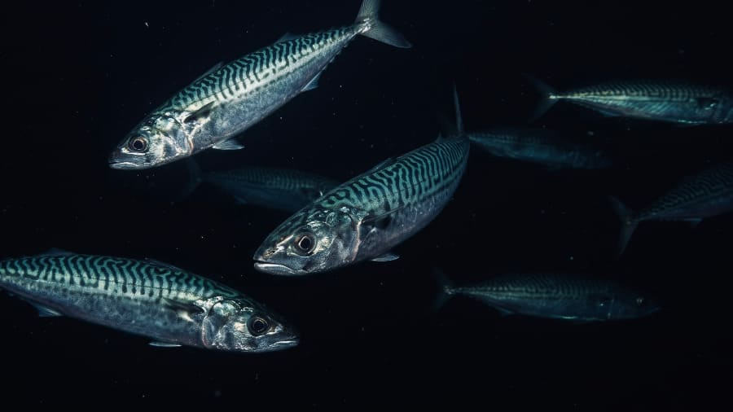
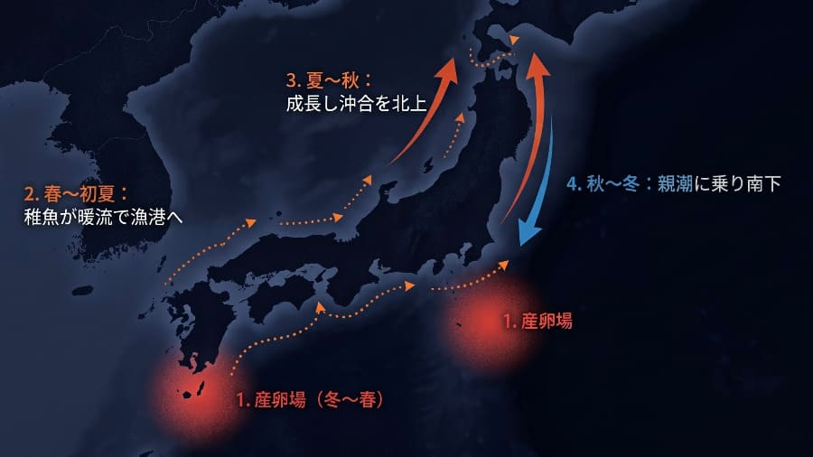
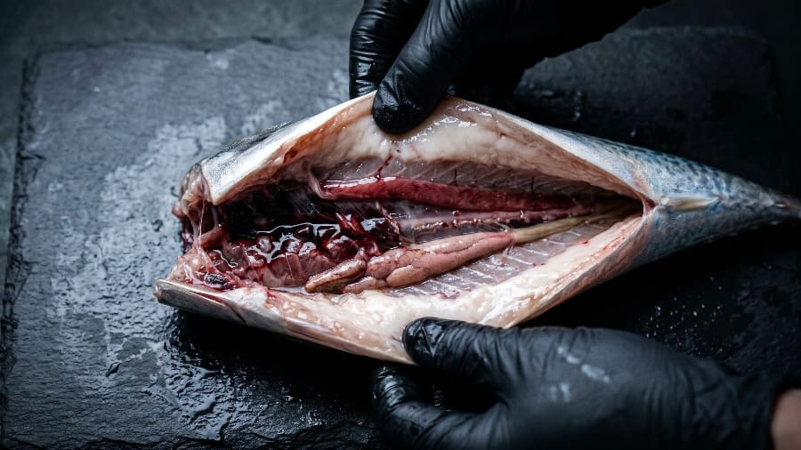

【現代科学】判明したサバの生態と未知の領域

初夏の防波堤。アミエビの煙幕が海中に広がると、どこからともなく青銀色の閃光が無数に走り、水面がざわめき立ちます。釣り人にとって最も身近で、時に「またサバか」と苦笑いさえ誘う小さな客人――小サバです。しかし、あなたのバケツの中で激しく震えているその小さな魚が、実は数千キロにおよぶ黒潮の旅路を乗り越えてきた「外洋の旅人」であることを、どれほどの人が知っているでしょうか。なぜ彼らは突如として港に現れ、ある日忽然と姿を消すのか。なぜ春から秋までずっと同じサイズで居続けるように見えるのか。そして、なぜあれほどまでに命を燃やし尽くすようにすぐ弱ってしまうのか。
私たちが当たり前のように釣っている「サバ」という魚の背中には、最新の海洋学や魚類生理学をもってしてもなお解き明かせない、深遠な生命のドラマが隠されています。さあ、釣り竿を少しだけ置いて、科学のレンズ越しに覗く「サバの真実の物語」へと潜ってみましょう。
1. 漁港に湧く小さな稚魚（小サバ）はどこから来るのか？
サバ類は浮魚（ペラジック）であり、親魚は沿岸の浅瀬ではなく、少し沖合の特定の水温帯で大規模な産卵を行います。
- マサバの主な産卵場：九州西岸、東シナ海から伊豆諸島周辺にかけての黒潮および黒潮内側域（水温15〜20℃前後の水深100m前後の海域）。
- 初期の移動メカニズム（海流による沖合からの受動的輸送）：産み落とされた卵（約1mmの浮遊卵）は数日で孵化し、仔魚・稚魚となります。ふ化直後の仔稚魚には自力で長距離を泳ぐ力がなく、動物プランクトンを捕食しながら黒潮や黒潮続流、対馬暖流などの海流に乗って受動的に輸送（受動的移送）されます。
- 漁港に湧く理由（沿岸の「成育場」への到達）：海流に乗って流される途中、潮目や沿岸の湧昇流（プランクトンが豊富に発生する場所）に到達します。成長に伴い遊泳力を獲得した稚魚が、初夏などに漁港などの沿岸域で数cm〜十数cmの小サバとして大量に湧くのは、波が穏やかでエサ（動物プランクトンや小型の甲殻類など）が豊富な沿岸や内湾を「成育場（成育期を過ごす場所）」として一時的に滞在するためです。川崎・横浜エリアの釣果ターゲットとして「初夏のサバ」が記録されるのも、海流で運ばれてきた稚魚が沿岸に滞在し、サビキ釣りなどで爆発的に釣れ盛る時期と生態的に一致します。
学術的出典
- 東京大学大気海洋研究所・水産研究・教育機構 共同プレスリリース『成長－回遊モデルによるマサバ初期成長への環境影響の解明』（2022年6月21日発表 / 原著論文：Guo, C., Ito, S., Kamimura, Y., & Xiu, P., Progress in Oceanography, 2022, DOI: 10.1016/j.pocean.2022.102821）
- 東京大学大気海洋研究所・大学院農学生命科学研究科 プレスリリース『黒潮大蛇行がマサバの成長と生残を低下させた仕組みを解明』（2026年7月14日発表 / 王子欽・伊藤進一ら）
2. ある程度大きくなったサバはどこに去ってしまうのか？
サバは成長するにつれて遊泳力が飛躍的に向上し、沿岸部にとどまる必要がなくなります。大きくなったサバが漁港から姿を消すのは、以下の回遊サイクルに組み込まれるためです。
- 遊泳力の向上と索餌回遊（春〜秋の北上）：体長が15〜20cm以上（さらには20〜30cm程度）に成長すると遊泳力が飛躍的に向上し、より多くの栄養を必要とします。春〜夏にかけて、より豊富なエサ（オキアミ類やカタクチイワシなどの小魚）と適水温（15〜20℃前後）を求めて外洋へ出ます。太平洋側（太平洋系群）では黒潮と親潮が交わる三陸沖・北海道沖などの移行帯を目指して、日本海側（対馬暖流系群）では日本海北部〜オホーツク海を目指して、広大な外洋を大群で高速移動（索餌のための北上回遊）します（1日50〜100km移動することもあるとされています）。
- 食物連鎖への移行と捕食リスク：成長途中の小サバは、沿岸から沖合の回遊ルートへ出る過程で大型青物の格好の餌となります。イナダなどの青物攻略において、ルアーサイズを「その日追っている小魚（イワシや小サバなど）」に合わせる重要性が言及されるのは、沖合へ移動し始めたサバの生態的ポジションを正確に反映しています。
- 越冬・産卵回遊（秋〜冬の南下）：秋口から冬にかけて水温が低下すると、今度は越冬と翌春の産卵のために温暖な南方海域（伊豆諸島周辺や九州西岸〜東シナ海など）へと南下回遊を始めます（この時期に三陸沖などで獲れるのが脂の乗った「秋サバ」です）。この日本列島周辺を大きく巡る壮大なサイクルを、寿命（約6〜8年）が尽きるまで繰り返します。

学術的出典
- 水産庁・水産研究・教育機構『わが国周辺の水産資源の評価（マサバ太平洋系群・マサバ対馬暖流系群・ゴマサバ）』
3. 春から秋まで同じサイズの小サバが漁港内に居る理由
- 多回産卵と「生まれ月（コホート）」のズレ：サバ類（マサバ・ゴマサバ）の親魚は、1シーズンに1回だけ産卵するのではなく、数日おきに何回も分けて卵を産む「多回産卵（バッチ産卵）魚」です。さらにマサバの産卵期は1〜6月（盛期は3〜5月）、ゴマサバはほぼ周年（主に冬〜初夏）と非常に長いため、海には「2月生まれ」「4月生まれ」「6月生まれ」といった発生時期の異なるグループ（コホート）が次々と生まれます。
- 成長した群れの離岸と、遅生まれ群の順次加入：サバの幼魚は初期成長が非常に早く、1日に約1〜2mmのペースで大きくなります。本来なら春に10cmだった個体は秋には20cm以上に達しますが、15〜20cmを超えたグループから順次、沖合の回遊ルートへと出ていきます。その空いた漁港のスペース（成育場）に、後から生まれた「遅生まれのグループ」や南方から遅れて輸送されてきたゴマサバの稚魚が次々と入り込む（加入する）ため、釣り人の目には「春から秋までずっと同じ10〜15cmサイズの小サバが居座っている」ように見える「群れの入れ替わり（ターンオーバー）」が起きています。実際に10月下旬の大洗港でもサビキ釣りでサバの釣果が記録されていますが、これは夏以降に遅れて加入した群れや、高水温期のゴマサバ幼魚が秋口まで港内に滞留している現象と一致します。
学術的出典
- 水産庁・水産研究・教育機構『わが国周辺の水産資源の評価（マサバ・ゴマサバ）』
- 水産研究・教育機構および水産海洋学会誌等における「マサバ当歳魚の耳石日輪解析を用いた孵化日組成・初期成長に関する研究（高橋素光・上村泰洋らの研究報告）」
4. なぜサバは釣るとすぐ弱るのか（いわゆる「サバの生き腐れ」の生理学的要因）
- 「ラム換水（Ram ventilation）」への高度な依存と窒息：日本近海のマサバやゴマサバは浮袋（鰾）を持っているものの（大西洋産のタイセイヨウサバは浮袋を欠く）、口を開けて前進し続けることでエラに大量の水流を送り込み酸素を取り込む「ラム換水（強制換水）」に強く依存した呼吸システムを持っています。そのため、釣り上げられたり狭いバケツに入れられたりして「前進遊泳」が制限されると、エラに十分な水を通すことができず、他の魚種（アジやメバルなど）と比べて極めて短時間で深刻な酸欠（窒息）に陥ります。
- 超高代謝とパニックによる「乳酸蓄積（アシドーシス）」：外洋を高速で泳ぎ続けるサバは、魚類の中でもトップクラスの基礎代謝量（酸素消費量）を持ちます。針に掛かって激しく暴れる（無酸素運動を行う）と、筋肉内のグリコーゲンが急激に消費され、血中および筋肉中に大量の「乳酸」が蓄積します。これにより血液のpHが急激に低下する「代謝性アシドーシス」を引き起こし、心機能の低下や細胞の浸透圧調整不全を招いて、たとえ海や活かしバケツに戻しても回復できずに死に至ります。
- 極めて薄い皮膚とウロコ剥離による浸透圧崩壊：サバのウロコは微細で剥がれやすく、皮膚も非常に薄い構造をしています。サビキカゴや網、人間の手（体温約36℃）に触れるだけで容易に表皮粘膜とウロコが剥離し、そこから体内の水分が海水へ奪われる「浸透圧調整不全」と熱ダメージが同時に進行します。イナダなどの大型魚を狙う泳がせ釣りにおいて、現地で調達した小サバは「元気に泳いでさえいれば最高の誘いとなる」反面、アジに比べて管理がシビアになるのはこの生理学的な脆弱性が原因です。
学術的出典
- 呼吸代謝・酸素消費量に関する研究：東京大学大気海洋研究所・水産研究・教育機構・JAMSTEC『魚類はエネルギー最効率化のため生育環境に応じて呼吸代謝特性を調整する』（2021年2月10日発表 / Guo et al., Frontiers in Marine Science, 2021, DOI: 10.3389/fmars.2021.613965）
- 釣獲ストレス・ハンドリングと生残：魚類生理学における浮魚類の運動生理・浸透圧調整に関する研究、および水産研究・教育機構の飼育・標識放流実験における知見（釣獲時のエラへの通水補助と表皮剥離防止の重要性に関する報告）
5. 「とろ鯖（高脂質サバ）」の学術的研究と、脂乗りに激しい個体差が生じる原因
「とろ鯖」は生物学的な固有種ではなく、マサバ（またはゴマサバ）のうち筋肉中の粗脂肪量（脂質含有量）が概ね15〜20%以上（高いものでは25〜30%近く）に達した高脂質個体を指します。同じ時期・同じ海域で釣れた同サイズのサバであっても、脂が乗った「とろ鯖」とパサパサの個体が混じる原因は、水産学・魚類生理学において以下の4つの要因で解明されています。
① 成熟・産卵履歴とエネルギー配分のトレードオフ（生殖腺体指数 GSI との逆相関）
サバが摂取した栄養（脂質）の使い道には、「自身の筋肉への蓄積（越冬・回遊エネルギー）」と「卵巣・精巣の発達（繁殖エネルギー）」の明確なトレードオフが存在します。多回産卵魚であるマサバは個体によって産卵のタイミングや回数が異なり、産卵を控えて生殖腺（白子や真子）にエネルギーを回している個体や、産卵直後の個体は筋肉中の脂質が数%まで枯渇します。一方、その年の産卵を早期に終えて索餌（エサ食い）に専念した個体や、まだ成熟に達していない若齢魚、あるいはその年の産卵をスキップ（休止）した個体は、摂取した脂質をすべて体脂肪として蓄えるため、極端な「とろ鯖」になります。
② 「居つき群（瀬付き）」と「外洋回遊群」の生活史の分岐
近年の耳石の微量元素分析や眼球水晶体の安定同位体比分析により、同じマサバの群れの中にも「数千キロを南北移動する外洋回遊型」と「三陸沖や豊後水道、東京湾口などのエサが豊富な大陸棚・内湾に留まる地域滞留型（瀬付き・居つき）」が存在することが判明しています。長距離を高速遊泳する回遊群は運動エネルギーとして脂質を激しく消費しますが、高密度の動物プランクトンやイワシが湧く好漁場に留まり、あまり移動せずに飽食している個体は、消費カロリーに対して摂取カロリーが大幅に上回るため、異常なほどの皮下脂肪・筋肉内脂肪を蓄えます（松輪サバや関サバ、八戸前沖さば等のブランド化の科学的根拠でもあります）。
③ 捕食しているベイト（餌料生物）の栄養価の差
サバの脂質含有量は、直近1〜2ヶ月間に「何をどれだけ食べたか」に強く依存します。冷水性で高脂質な大型カイアシ類（ネオカラヌス類など）やオキアミ類、脂の乗ったカタクチイワシを集中的に捕食できた群れ（または個体）は、急速に体脂肪率が上昇します。逆に、黒潮の流路変動（黒潮大蛇行など）によって温暖で貧栄養な水塊に取り残され、小型プランクトンしか摂餌できなかった個体は、同じ体長でも痩せて脂が乗らない状態になります。
④ 密度効果（群れの過密による餌の奪い合い）
資源量が爆発的に増えた年（卓越年級群の発生時）には、1匹あたりが食べられるエサの量が減少する「密度効果」が働き、魚体が小型化・低脂質化することが確認されています。同じ海域にいても、どの群れ（パッチ）に属していたかによって摂餌成功率が大きく異なるため、顕著な個体差となって現れます。

学術的出典
- 吉満友野・加藤正人・小林正三（2018）『銚子漁港に水揚げされたマサバにおける脂質含量の季節変動と生殖腺の発達との関係性』日本水産学会誌, 84(6), 1017-1024.（DOI: 10.2331/suisan.18-00025）
- 水産研究・教育機構および八戸水産事務所等によるマサバ太平洋系群の粗脂肪量の季節変化および非破壊測定（近赤外分光法・生体電気インピーダンス法）に関する研究
- 東京大学大気海洋研究所『黒潮大蛇行がマサバの成長と生残を低下させた仕組みを解明』（2026年7月14日発表）
6. サバについて、現代の科学でもまだ完全には解明されていない「生物学的・海洋学的な謎」
最も身近な大衆魚でありながら、外洋を広範囲かつ高速で移動するサバには、現在も水産海洋学者たちが挑み続けている「未解明の謎」がいくつも残されています。
謎①：数十年周期で起きる「魚種交代（レジーム・シフト）」の根本メカニズム
日本の周辺海域では、数十年周期で「マイワシが爆発的に増えてマサバが減る時代」と「マサバが増えてマイワシが激減する時代」が交互に入れ替わる魚種交代（レジーム・シフト）という劇的な現象が起きます。海洋の数十年規模の気候変動（PDO：太平洋十年規模振動など）による水温やプランクトン組成の変化が引き金であることは分かっていますが、「なぜ同じプランクトン食の浮魚なのに、イワシとサバが同時に繁栄できず、シーソーのように劇的に入れ替わるのか？」という生理的・生態的な決定打は、今なお世界中の研究者の間で議論が続いています。
謎②：外洋の何もない海中で、どうやって「正確な産卵場」へ帰還するのか（ナビゲーション能力の謎）
サバは秋に北海道・三陸沖から南下し、冬〜春にかけて伊豆諸島周辺などの特定の海域（水深100〜200mの海山や島棚周辺）へピタリと集結して産卵します。サケのように川の匂い（嗅覚）を頼りにできない広大な外洋の真ん中で、彼らが「地磁気（磁気コンパス）」「太陽コンパス」「水温・塩分の微細な勾配」「海流の向き」のどれをどのように組み合わせて自分の現在地を知り、毎年同じ産卵場へナビゲーションしているのか、その感覚器のメカニズムは未だブラックボックスです。
謎③：産卵期に突然消える「昼夜鉛直移動」と、深場での夜間行動の謎
近年のバイオロギング（魚体に小型データロガーを装着して放流・回収する調査）により、マサバは通常、昼間は水深100〜200mの深場に潜り、夜間に表層近くへ浮上する「日周鉛直移動（DVM）」を繰り返していることが判明しました。しかし、産卵期に入るとこの規則的な上下移動のパターンが突如として消失することが観測されています。彼らが水深100〜200mの暗黒の海中で、どのように相手を見つけてペアリング（あるいは集団放卵・放精）を行い、なぜ特定の時間帯や潮回りに一斉産卵のスイッチが入るのか、野生下での直接観察はほとんど成功していません。
謎④：回遊するか、漁港や沿岸に居つくかを決める「運命の分岐点（条件付けスイッチ）」
同じ親から生まれ、同じ海流に乗って沿岸にたどり着いたサバの稚魚のうち、大多数は成長とともに外洋の大回遊へと旅立ちますが、一部のグループは沿岸や内湾、特定の天然礁にそのまま居つきます（瀬付きサバ）。この「旅に出るか、定住するか」という行動の分岐（条件付け戦略）が、遺伝的な違いなのか、それとも幼魚期の特定の時期に「一定以上の脂質を蓄えたか（栄養状態の閾値）」によって後天的にスイッチが切り替わるのか、その正確なトリガーはまだ完全には解き明かされていません。
学術的出典
- 水産研究・教育機構 公表論文『マサバの行動モニタリングに成功しました』（2023年3月16日発表 / 安田十也・木下順二・新野洋平・奥山隼一）
- 海洋研究開発機構（JAMSTEC）・東京大学大気海洋研究所・水産研究・教育機構 共同発表『魚の眼球に記録された稚魚期からの生活史を解読する方法を開発』（2022年2月4日発表 / 阪本昂平ら『眼球水晶体の軽元素同位体比を用いてマサバの回遊履歴を復元する』）
- 川崎健（東北大学名誉教授）らが提唱した「浮魚類のレジーム・シフト理論と資源変動メカニズムに関する研究」
南の海で産み落とされたわずか1ミリの命が、黒潮という大河に身を委ね、数え切れない捕食者の牙をかいくぐって、今あなたの立つ防波堤へとたどり着きました。泳ぎ続けなければ息絶えてしまう宿命を背負い、やがて北の荒波へと旅立つ者もいれば、豊かな内湾に留まって極上の脂を蓄える者もいる。そして数十年という地球規模の呼吸（レジーム・シフト）の中で、彼らはイワシと覇権を交代しながら、太古の昔からこの海の生態系を支え続けています。
次にあなたのサビキ仕掛けに小サバが掛かり、手元にブルブルと小気味よい振動が伝わってきたとき――どうか少しだけ、その青く輝く背中を見つめてみてください。そこにあるのは、単なる「外道」や「ありふれた大衆魚」の姿ではありません。いまだ人類が解き明かせないコンパスの秘密を胸に秘め、広大な太平洋を全力で駆け抜ける、誇り高き「小さなアスリート」の姿なのですから。
あわせて読みたい
📍 関東のサバ生息・釣果スポット
※マップ上の赤いドットが釣れるポイントです。